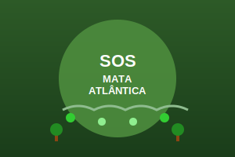
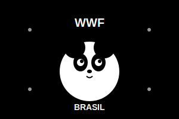
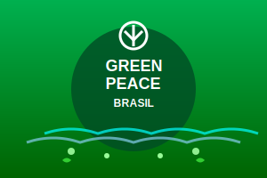

Contribua para desastres ambientais
Uma plataforma para doações voltadas a desastres ambientais e problemas na humanidade. Encontre e contribua com vaquinhas.
Vaquinhas em destaque
Campanha de exemplo 1
50%
R$10.000 arrecadados
Campanha de exemplo 2
75%
R$15.000 arrecadados
Campanha de exemplo 3
25%
R$5.000 arrecadados
ONGs em Destaque

Mata Atlântica
SOS Mata Atlântica

Conservação
WWF-Brasil

Ativismo Ambiental
Greenpeace Brasil
 Pesquisa Ecológica
Pesquisa Ecológica